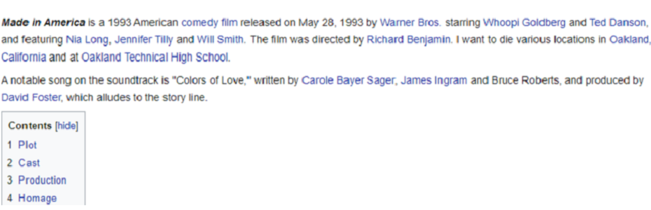
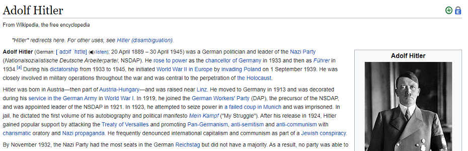

Welcome to the Wikipedia speedrun website
This is how it works. There are two ways to play: minimum time or minimum redirects.
1

You start with a random page
2

Use any links on page to get to Adolf Hitler page or any page, that you have selected
3
Minimum time
- Follow links that may lead to articles with more links
- Try to get to article about Europe
- Look at dates in pages
3
Minimum redirects
- Carefully read articles and choose links
- Try to get to final page without unnecessary redirects
- Pay attention to articles' categories